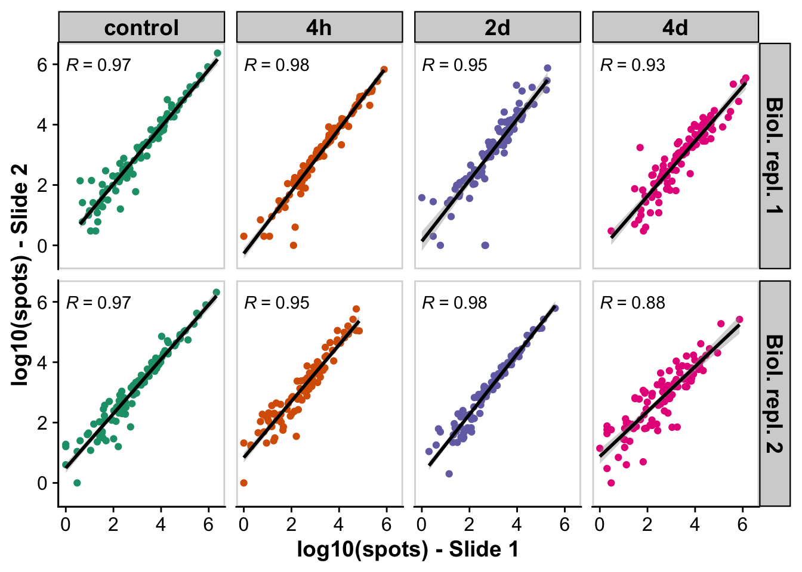
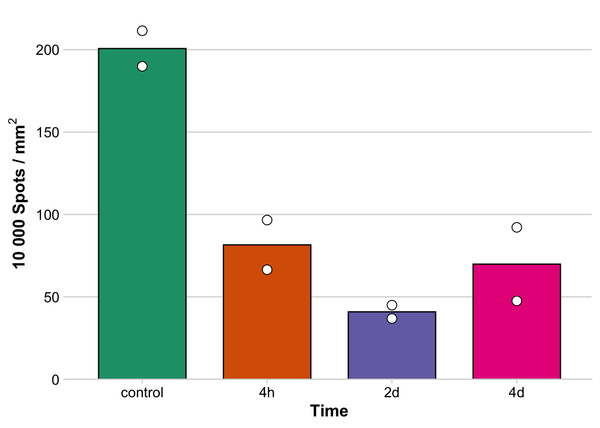
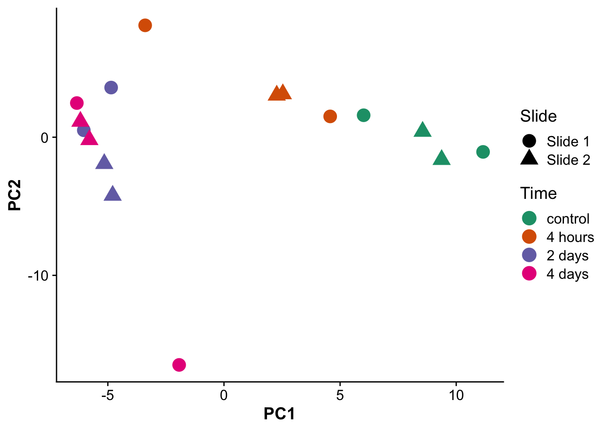
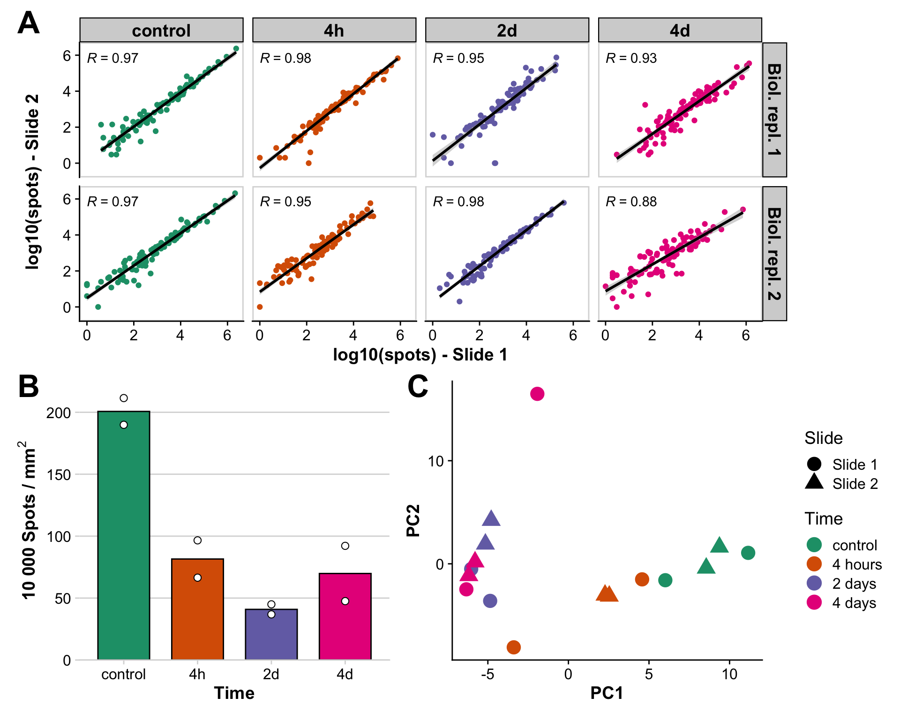

Last updated: 2023-08-24
Checks: 6 1
Knit directory: mi_spatialomics/
This reproducible R Markdown analysis was created with workflowr (version 1.7.0). The Checks tab describes the reproducibility checks that were applied when the results were created. The Past versions tab lists the development history.
The R Markdown file has unstaged changes. To know which version of
the R Markdown file created these results, you’ll want to first commit
it to the Git repo. If you’re still working on the analysis, you can
ignore this warning. When you’re finished, you can run
wflow_publish to commit the R Markdown file and build the
HTML.
Great job! The global environment was empty. Objects defined in the global environment can affect the analysis in your R Markdown file in unknown ways. For reproduciblity it’s best to always run the code in an empty environment.
The command set.seed(20230612) was run prior to running
the code in the R Markdown file. Setting a seed ensures that any results
that rely on randomness, e.g. subsampling or permutations, are
reproducible.
Great job! Recording the operating system, R version, and package versions is critical for reproducibility.
Nice! There were no cached chunks for this analysis, so you can be confident that you successfully produced the results during this run.
Great job! Using relative paths to the files within your workflowr project makes it easier to run your code on other machines.
Great! You are using Git for version control. Tracking code development and connecting the code version to the results is critical for reproducibility.
The results in this page were generated with repository version e8204f0. See the Past versions tab to see a history of the changes made to the R Markdown and HTML files.
Note that you need to be careful to ensure that all relevant files for
the analysis have been committed to Git prior to generating the results
(you can use wflow_publish or
wflow_git_commit). workflowr only checks the R Markdown
file, but you know if there are other scripts or data files that it
depends on. Below is the status of the Git repository when the results
were generated:
Ignored files:
Ignored: .DS_Store
Ignored: .Rhistory
Ignored: .Rproj.user/
Ignored: analysis/.DS_Store
Ignored: analysis/deprecated/.DS_Store
Ignored: data/.DS_Store
Ignored: data/140623.calcagno_et_al.seurat_object.rds
Ignored: data/Calcagno2022_int_logNorm_annot.h5Seurat
Ignored: data/mol_cart.heart_regions/
Ignored: data/pixie.cell_table_size_normalized_cell_labels.csv
Ignored: data/seqIF_regions_annotations/
Ignored: figures/.DS_Store
Ignored: omnipathr-log/
Ignored: output/.DS_Store
Ignored: output/lunaphore_images/
Ignored: output/mol_cart/
Ignored: output/proteomics/
Ignored: output/seqIF/
Ignored: plots/.DS_Store
Ignored: plots/Figure1.umap_plot.pdf
Ignored: references/.DS_Store
Ignored: renv/.DS_Store
Ignored: renv/library/
Ignored: renv/staging/
Untracked files:
Untracked: analysis/__pycache__/
Untracked: analysis/deprecated/molkart.quantify_cells_in_regions.ipynb
Untracked: analysis/deprecated/napari_points.ipynb
Untracked: analysis/deprecated/roi.csv
Untracked: analysis/deprecated/roi2.csv
Untracked: analysis/deprecated/test_construct_spatialdata.ipynb
Untracked: analysis/figures.deep_visual_proteomics.Rmd
Untracked: analysis/mol_cart.QC_spots.Rmd
Untracked: analysis/mol_cart.molkart.Figure1.Rmd
Untracked: analysis/mol_cart.molkart.process_quantifications_seurat.Rmd
Untracked: analysis/molecular_cartography_python/
Untracked: analysis/seqIF.heatmaps_pixie.figure3.Rmd
Untracked: analysis/seqIF.region_quantification.Rmd
Untracked: analysis/seqIF_python/
Untracked: analysis/spatialMI_functions.py
Untracked: plots/Figure3.cell_types_overtimes.pdf
Untracked: plots/Figure3.pixel_clusters_overtimes.pdf
Unstaged changes:
Modified: .gitignore
Modified: analysis/data_analysis.Rmd
Modified: analysis/data_processing.Rmd
Modified: analysis/figures.Rmd
Deleted: analysis/figures.figure_5.Rmd
Modified: analysis/figures.supplementary_figure_2.Rmd
Modified: analysis/figures.supplementary_figure_X.proteomics_qc.Rmd
Deleted: analysis/molkart.Figure1.Rmd
Deleted: analysis/molkart.QC_spots.Rmd
Deleted: analysis/molkart.process_quantifications_seurat.Rmd
Modified: analysis/proteomics.bulk_de_analysis.Rmd
Modified: analysis/proteomics.filter_proteomic_data.Rmd
Modified: analysis/proteomics.pathway_enrichment_analysis.Rmd
Modified: analysis/proteomics.scRNAseq_comparison.Rmd
Deleted: analysis/python/lunaphore.figure_3.create_pixie_images.ipynb
Deleted: analysis/python/lunaphore.figure_3.pixie_heatmaps.ipynb
Deleted: analysis/python/molkart.count_spots_on_tissue.ipynb
Deleted: analysis/python/molkart.plot_MC_spots.ipynb
Deleted: analysis/python/molkart.plot_spots_figure1.ipynb
Deleted: analysis/python/molkart.quantify_cells_in_regions.ipynb
Deleted: analysis/python/napari_points.ipynb
Deleted: analysis/python/roi.csv
Deleted: analysis/python/roi2.csv
Deleted: analysis/python/spatialMI_functions.py
Deleted: analysis/python/test_construct_spatialdata.ipynb
Deleted: data/molkart.spots_per_tissue.tsv
Modified: figures/Figure_5.eps
Modified: figures/Figure_5.pdf
Modified: figures/Figure_5.png
Modified: figures/Figure_5.svg
Deleted: output/limma.full_statistics.tsv
Deleted: output/limma.mi_iz_specific_proteins.tsv
Deleted: output/mi_iz_specific_proteins.tsv
Deleted: output/molcart.misty_celltype_table.tsv
Deleted: output/molkart_segmentation_images/sample_control_r1_s1.DAPI_WGA.crop.png
Deleted: output/molkart_segmentation_images/sample_control_r1_s1.DAPI_WGA.crop.scale.png
Deleted: output/molkart_segmentation_images/sample_control_r1_s1.DAPI_WGA.roi.tif
Deleted: output/molkart_segmentation_images/sample_control_r1_s1.DAPI_WGA.tif
Deleted: output/molkart_segmentation_images/sample_control_r1_s1.DAPI_WGA_roi.crop.png
Deleted: output/molkart_segmentation_images/sample_control_r1_s1.DAPI_WGA_roi.crop.scale.png
Deleted: output/molkart_segmentation_images/sample_control_r1_s1.cellpose_full_image.outline.tif
Deleted: output/molkart_segmentation_images/sample_control_r1_s1.cellpose_full_image.roi.outline.tif
Deleted: output/molkart_segmentation_images/sample_control_r1_s1.cellpose_full_image.roi.tif
Deleted: output/molkart_segmentation_images/sample_control_r1_s1.cellpose_full_image.tif
Deleted: output/molkart_segmentation_images/sample_control_r1_s1.cellpose_mask.crop.png
Deleted: output/molkart_segmentation_images/sample_control_r1_s1.cellpose_mask.crop.scale.png
Deleted: output/molkart_segmentation_images/sample_control_r1_s1.cellpose_mask_roi.crop.png
Deleted: output/molkart_segmentation_images/sample_control_r1_s1.cellpose_mask_roi.crop.scale.png
Deleted: output/pca_spots.tsv
Deleted: output/proteomics.filt_imputed_proteins.tsv
Deleted: output/proteomics.filtered_proteins.tsv
Deleted: output/proteomics.pathway_results.MIiz_MIremote.tsv
Deleted: output/proteomics.pca_res.rds
Deleted: output/proteomics.protein_missing_stats.tsv
Deleted: output/proteomics.snRNAseq_comp.tsv
Deleted: output/proteomics.vsn_norm_proteins.tsv
Deleted: output/spots_per_tissue.tsv
Deleted: output/tx_abundances_per_slide.tsv
Modified: plots/Figure1.dotplot.pdf
Note that any generated files, e.g. HTML, png, CSS, etc., are not included in this status report because it is ok for generated content to have uncommitted changes.
These are the previous versions of the repository in which changes were
made to the R Markdown
(analysis/figures.supplementary_figure_2.Rmd) and HTML
(docs/figures.supplementary_figure_2.html) files. If you’ve
configured a remote Git repository (see ?wflow_git_remote),
click on the hyperlinks in the table below to view the files as they
were in that past version.
| File | Version | Author | Date | Message |
|---|---|---|---|---|
| html | d7ea71e | FloWuenne | 2023-08-11 | Build site. |
| Rmd | 64318a3 | FloWuenne | 2023-08-11 | wflow_publish(c("analysis/molkart.process_quantifications_seurat.Rmd", |
The data used in this plot was calculated here:1_QC_spots.Rmd
merge_tx_sums <- vroom("./output/mol_cart/tx_abundances_per_slide.tsv")Rows: 799 Columns: 5
── Column specification ────────────────────────────────────────────────────────
Delimiter: "\t"
chr (3): gene, sample_ID, time
dbl (2): total_tx_rep1, total_tx_rep2
ℹ Use `spec()` to retrieve the full column specification for this data.
ℹ Specify the column types or set `show_col_types = FALSE` to quiet this message.merge_tx_sums_split <- merge_tx_sums %>%
separate(sample_ID, into = c("string","time","replicate"))
# Replace replicate by slide ID
merge_tx_sums_split$replicate <- gsub("r1","Biol. repl. 1",merge_tx_sums_split$replicate)
merge_tx_sums_split$replicate <- gsub("r2","Biol. repl. 2",merge_tx_sums_split$replicate)
# Set order of time
merge_tx_sums_split$time <- factor(merge_tx_sums_split$time,
levels = c("control","4h","2d","4d"))
tx_correlation_plot <- ggplot(merge_tx_sums_split,aes(log10(total_tx_rep1),log10(total_tx_rep2))) +
geom_point(aes(color = time)) +
geom_smooth(method = "lm", color = "black") +
labs(x = "log10(spots) - Slide 1",
y = "log10(spots) - Slide 2") +
stat_cor(aes(label = ..r.label..), method = "spearman") +
facet_grid(replicate ~ time) +
scale_color_brewer(palette = "Dark2") +
theme(strip.text = element_text(face = "bold", color = "black", size = 14),
strip.background = element_rect(fill = "lightgrey", linetype = "solid",
color = "black", linewidth = 0.8),
axis.title = element_text(face="bold"),
legend.position = "none"
) +
panel_border()
tx_correlation_plotWarning: The dot-dot notation (`..r.label..`) was deprecated in ggplot2 3.4.0.
ℹ Please use `after_stat(r.label)` instead.
This warning is displayed once every 8 hours.
Call `lifecycle::last_lifecycle_warnings()` to see where this warning was
generated.`geom_smooth()` using formula = 'y ~ x'Warning: Removed 9 rows containing non-finite values (`stat_smooth()`).Warning: Removed 9 rows containing non-finite values (`stat_cor()`).Warning: Removed 9 rows containing missing values (`geom_point()`).
| Version | Author | Date |
|---|---|---|
| d7ea71e | FloWuenne | 2023-08-11 |
The data used in this plot was calculated here: {1_QC_spots.Rmd}(../analysis/1_count_spots_on_tissue.ipynb)
spots_tissue <- vroom("./output/mol_cart/spots_per_tissue.tsv")Rows: 8 Columns: 4
── Column specification ────────────────────────────────────────────────────────
Delimiter: "\t"
chr (1): sample
dbl (3): tissue_area, spot_count, spots_per_um2
ℹ Use `spec()` to retrieve the full column specification for this data.
ℹ Specify the column types or set `show_col_types = FALSE` to quiet this message.spots_tissue <- spots_tissue %>%
separate(sample, into =c("sample","time","replicate","slide"), sep = "_")
spots_tissue$time <- factor(spots_tissue$time,levels = c("control","4h","2d","4d"))
spots_per_um <- ggbarplot(spots_tissue,
x = "time",
y = "spots_per_um2",
add = c("mean", "dotplot"),
fill = "time", color = "black",
palette = "Dark2") +
labs (x = "Time",
y = expression(bold(paste("Spots / ",mu,m^2, sep="")))) +
font("xlab", size = 16, color = "black", face = "bold") +
font("ylab", size = 16, color = "black", face = "bold") +
scale_y_continuous(
# don't expand y scale at the lower end
expand = expansion(mult = c(0, 0.05))
) +
theme_minimal_hgrid() +
rremove("legend")
spots_per_umBin width defaults to 1/30 of the range of the data. Pick better value with
`binwidth`.
| Version | Author | Date |
|---|---|---|
| d7ea71e | FloWuenne | 2023-08-11 |
avg_spots_per_um = mean(spots_tissue$spots_per_um2)
avg_spots_per_um[1] 0.9824519The data used in this plot was calculated here: {1_QC_spots.Rmd}(../analysis/1_QC_spots.Rmd)
pcs <- vroom("./output/mol_cart/pca_spots.tsv")Rows: 16 Columns: 20
── Column specification ────────────────────────────────────────────────────────
Delimiter: "\t"
chr (4): time, replicate, slide, label
dbl (16): PC1, PC2, PC3, PC4, PC5, PC6, PC7, PC8, PC9, PC10, PC11, PC12, PC1...
ℹ Use `spec()` to retrieve the full column specification for this data.
ℹ Specify the column types or set `show_col_types = FALSE` to quiet this message.pcs$time <- factor(pcs$time,
levels = c("control","4h","2d","4d"))pca_plot <- ggplot(pcs,aes(PC1,PC2,label = label)) +
geom_point(size = 5, aes(color = time, shape = slide)) +
scale_color_brewer(palette = "Dark2",labels = c("control","4 hours","2 days","4 days")) +
labs(color = "Time",
shape = "Slide")
pca_plot
| Version | Author | Date |
|---|---|---|
| d7ea71e | FloWuenne | 2023-08-11 |
supp_figure_2 <- tx_correlation_plot / (spots_per_um | pca_plot)
supp_figure_2 <- supp_figure_2 +
plot_annotation(tag_levels = 'A') &
theme(plot.tag = element_text(size = 25)) +
theme(plot.background = element_rect(fill = "white"))
supp_figure_2`geom_smooth()` using formula = 'y ~ x'Warning: Removed 9 rows containing non-finite values (`stat_smooth()`).Warning: Removed 9 rows containing non-finite values (`stat_cor()`).Warning: Removed 9 rows containing missing values (`geom_point()`).Bin width defaults to 1/30 of the range of the data. Pick better value with
`binwidth`.
| Version | Author | Date |
|---|---|---|
| d7ea71e | FloWuenne | 2023-08-11 |
save_plot(filename = "./figures/Supplementary_figure_2.png",
plot = supp_figure_2,
base_height = 8)`geom_smooth()` using formula = 'y ~ x'Warning: Removed 9 rows containing non-finite values (`stat_smooth()`).Warning: Removed 9 rows containing non-finite values (`stat_cor()`).Warning: Removed 9 rows containing missing values (`geom_point()`).Bin width defaults to 1/30 of the range of the data. Pick better value with
`binwidth`.save_plot(filename = "./figures/Supplementary_figure_2.eps",
plot = supp_figure_2,
base_height = 8)`geom_smooth()` using formula = 'y ~ x'Warning: Removed 9 rows containing non-finite values (`stat_smooth()`).Warning: Removed 9 rows containing non-finite values (`stat_cor()`).Warning: Removed 9 rows containing missing values (`geom_point()`).Bin width defaults to 1/30 of the range of the data. Pick better value with
`binwidth`.Warning in grid.Call.graphics(C_polygon, x$x, x$y, index): semi-transparency is
not supported on this device: reported only once per page
sessionInfo()R version 4.2.3 (2023-03-15)
Platform: aarch64-apple-darwin20 (64-bit)
Running under: macOS Ventura 13.5
Matrix products: default
BLAS: /Library/Frameworks/R.framework/Versions/4.2-arm64/Resources/lib/libRblas.0.dylib
LAPACK: /Library/Frameworks/R.framework/Versions/4.2-arm64/Resources/lib/libRlapack.dylib
locale:
[1] en_US.UTF-8/en_US.UTF-8/en_US.UTF-8/C/en_US.UTF-8/en_US.UTF-8
attached base packages:
[1] stats graphics grDevices datasets utils methods base
other attached packages:
[1] here_1.0.1 ggsci_3.0.0 cowplot_1.1.1 lubridate_1.9.2
[5] forcats_1.0.0 stringr_1.5.0 dplyr_1.1.2 purrr_1.0.1
[9] readr_2.1.4 tidyr_1.3.0 tibble_3.2.1 tidyverse_2.0.0
[13] ggpubr_0.6.0 ggplot2_3.4.2 vroom_1.6.3 patchwork_1.1.2
[17] RColorBrewer_1.1-3 workflowr_1.7.0
loaded via a namespace (and not attached):
[1] nlme_3.1-162 fs_1.6.3 bit64_4.0.5
[4] httr_1.4.6 rprojroot_2.0.3 tools_4.2.3
[7] backports_1.4.1 bslib_0.5.0 utf8_1.2.3
[10] R6_2.5.1 mgcv_1.8-42 colorspace_2.1-0
[13] withr_2.5.0 tidyselect_1.2.0 processx_3.8.2
[16] bit_4.0.5 compiler_4.2.3 git2r_0.32.0
[19] textshaping_0.3.6 cli_3.6.1 labeling_0.4.2
[22] sass_0.4.7 scales_1.2.1 callr_3.7.3
[25] systemfonts_1.0.4 digest_0.6.33 rmarkdown_2.23
[28] pkgconfig_2.0.3 htmltools_0.5.5 fastmap_1.1.1
[31] highr_0.10 rlang_1.1.1 rstudioapi_0.15.0
[34] jquerylib_0.1.4 generics_0.1.3 farver_2.1.1
[37] jsonlite_1.8.7 car_3.1-2 magrittr_2.0.3
[40] Matrix_1.5-3 Rcpp_1.0.11 munsell_0.5.0
[43] fansi_1.0.4 abind_1.4-5 lifecycle_1.0.3
[46] stringi_1.7.12 whisker_0.4.1 yaml_2.3.7
[49] carData_3.0-5 grid_4.2.3 parallel_4.2.3
[52] promises_1.2.0.1 crayon_1.5.2 lattice_0.20-45
[55] splines_4.2.3 hms_1.1.3 knitr_1.43
[58] ps_1.7.5 pillar_1.9.0 ggsignif_0.6.4
[61] glue_1.6.2 evaluate_0.21 getPass_0.2-2
[64] renv_1.0.0 BiocManager_1.30.21.1 vctrs_0.6.3
[67] tzdb_0.4.0 httpuv_1.6.11 gtable_0.3.3
[70] cachem_1.0.8 xfun_0.39 broom_1.0.5
[73] rstatix_0.7.2 later_1.3.1 ragg_1.2.5
[76] timechange_0.2.0